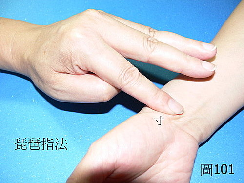

脈理醫理學 26.1：藥王脈學琵琶指法
作者：陳建元
「琵琶指法」是 藥王脈學中的特殊指法。當把脈時，並不三指同時按下。三指一樣對應寸關尺，食指對應寸，中指對應關，無名指對應尺。但當要偵察寸脈的情況時，則只有食指下按，其餘無關的中指和無名指則必需同時上翹離開皮膚不要按在皮膚上。當要偵察關脈的情況時，則只有中指下按，其餘無關的食指和無名指則必需同時上翹離開皮膚不要按在皮膚上。當要偵察尺脈的情況時，則只有無名指下按，其餘無關的食指和中指則必需同時上翹離開皮膚，不要按在皮膚上。
換言之，這種按脈的手法就是每次只按一部脈，並不同時一次下按三部脈。這種跳躍式的手法，很像彈琵琶的動作，所以叫做琵琶指法。
或問：那如果把其餘的兩指只輕輕地放在皮膚上，不要用力這樣子是不是也可以？
答：依實際上觀察起來是不太恰當，因為雖然輕輕地放在皮膚上，但還是會分散掉一些注意力，你要觀察的那部脈象也會變的比 較不清晰。藥王脈學中用的指法一律是「琵琶指法」。參照〈圖 7、圖101、圖102、圖103〉。
【註：本文必須同時參照脈理醫理學 16：脈診時三指同時下按是一大謬誤】

或問：師父請問一下，琵琶指法是採用平指按法，用指腹來搭脈，而不是傳統的立指按法，這中間有玄機嘛？另外是否大拇指內縮，才能使三指不致於僵硬，我這樣理解對嘛？病患手不是完全平放桌面，而是呈45度角來搭脈，這角度有何重點，還請師父慈悲開示～～
答：沒這麼複雜啦，跟你中醫診所看到的差不多，只是不是三指同下，而是分指單按而已，其他都差不多。大拇指是自然內縮而已，因為一般是左手把左手，右手把右手，拇指內縮比較順手和穩定。
或問：陳老師您好，您圖上顯示用的是指腹，您對使用指目與指尖之看法與運用之不同？
答：請參照〈圖104〉。
或問：一般是左手把左手，右手把右手，
請問，是否可以只使用右手手指來把脈？
答：
習慣後用哪一手把並無問題。因為這套脈法，主要是配合脈圖脈理醫理學 67：藥王脈圖來使用的，脈圖的目的，乃在於能把700～800字的龐大脈診資料，縮在短期間3～5分鐘內，能夠速記完畢，而記載詳細的目的，又在於方便與第二診的比對，如此用藥，哪一經有入藥，哪一經無入藥當加強，哪一經補不進去，哪一經攻不進去，比對之下一目了然，則用藥變成真憑有據，依實據而行，而不是模糊大概的猜測。這是用來補強歷代脈法，記載方式籠統，因為單用文字，在時間和描述上，無法把脈象做詳細記錄，結果第二診、三診‥‥‥時，等於每次都是從新把脈診斷，但因為病人多，醫師不可能記得病人初診時，脈象的詳細模樣，如此得來的脈診資料，看不出細微處，根本沒功用，變成每一診的診斷資料，都是各別分開的獨立事件，彼此關聯性不大。譬如初診寫脈浮緊，二診也寫脈浮緊，這對用藥的判別有什麼功用？根本沒功用！若是用脈圖，因為旁邊有標示上脈的強度，所以可以一眼看出，初診是脈浮緊，二診雖也是脈浮緊，但因為「強度」已經減弱了，就知道上次的藥有效果了；同時，也發現初診的腎脈是弱，但二診的腎脈更弱，這是提示腎臟的負擔已經較重，合這種動態脈圖，就知 道二診的用藥，發表藥當減弱，同時應該加些扶腎藥以助腎，以防腎臟負擔過重。這種脈圖的比對，是讓中醫走出以往下藥的籠統主觀猜測，變成客觀有根據的方式，也是大幅提高臨床有效率的關鍵點。
一般用這種方式的時候，如果是慣用右手者，因為脈分六部，資料不少，不可能通通把完脈再記錄，容易忘記，一定是只用左手來把患者的左、右手，而自己的右手，則在左手把脈的同時，同步書寫做記錄的動作。
【引用請先來信告知徵求同意，若有涉及販售營利等商業行為，版權所有拷貝盜用必究。】
【藥王脈學講壇】http://blog.xuite.net/drjychen/twblog